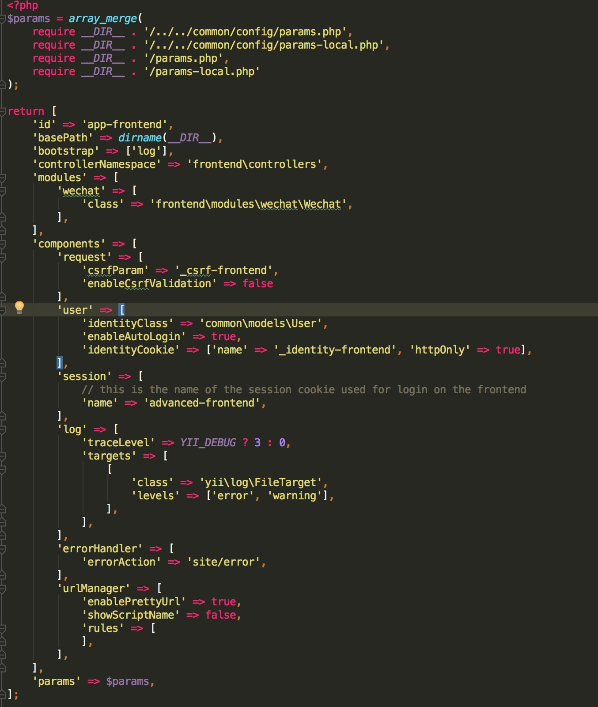
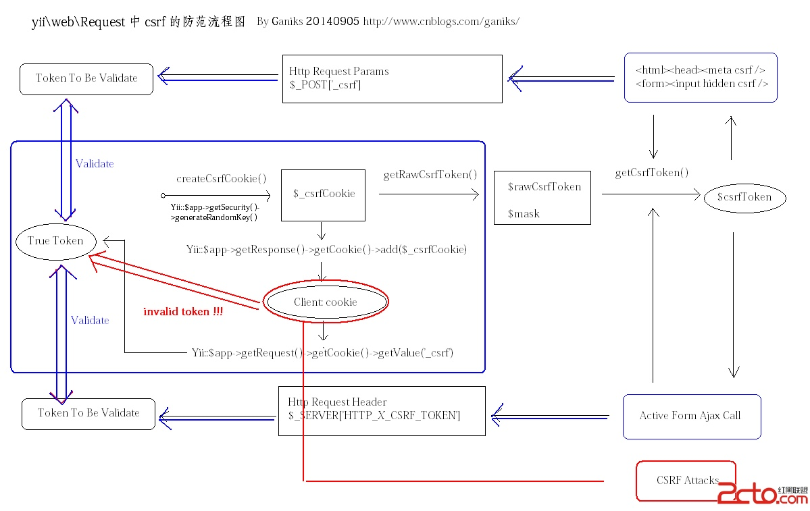

YII2.0中POST请求时返回Bad Request (#400): Unable to verify your data submission.的解决方法
问题描述
在yii中，使用接口访问时出现一个问题：使用POST请求无论怎么调试都返回：
Bad Request (#400): Unable to verify your data submission.
而同一个接口使用GET请求时又都能正常请求成功。是什么原因呢？
解决方法
查了下网络上的资料，发现其实是yii的CSRF防范策略导致的问题。意思就是说，有两种解决办法：
- 如果你不想使用CSRF，那么可以在配置文件中添加一行配置关闭CSRF：
'enableCsrfValidation' => false,

- 而如果你想使用它，那么就需要在请求时带上这个参数：
<input name="_csrf" type="hidden" id="_csrf" value="<?= Yii::$app->request->csrfToken ?>">
进一步深入

参考文献
YII2.0中POST请求时返回Bad Request (#400): Unable to verify your data submission.的解决方法